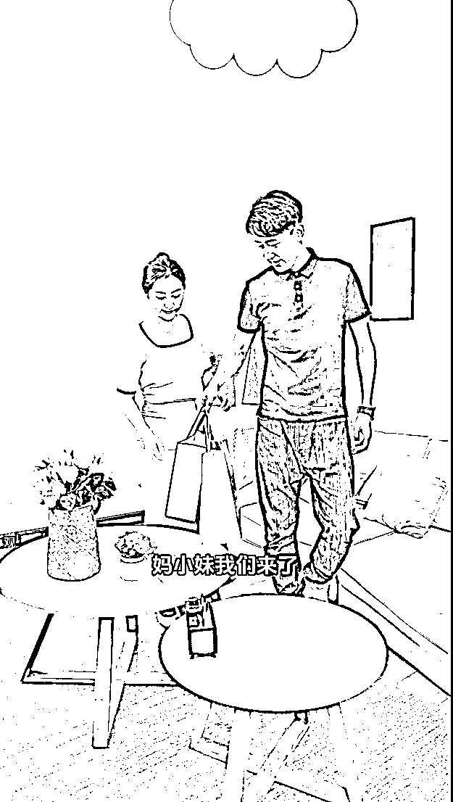
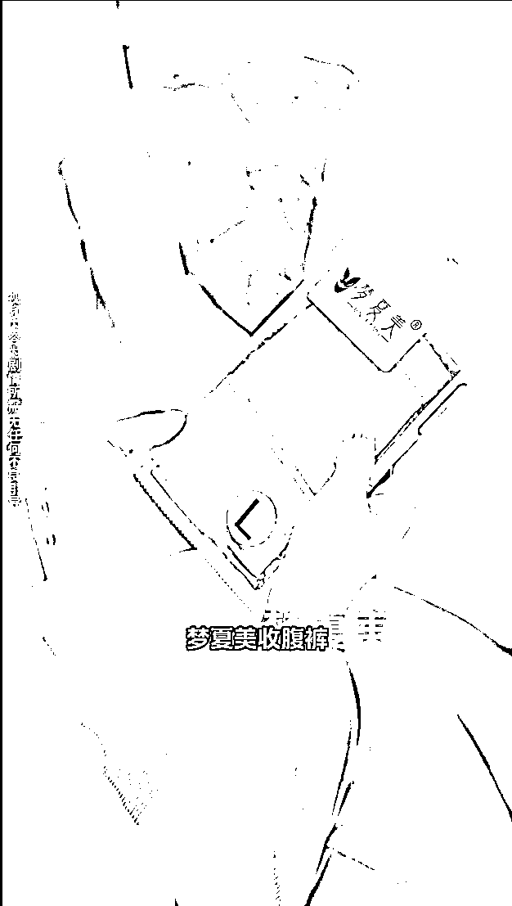

来源：https://tb9qrhlhl7.feishu.cn/docx/V4VBdWP8UoN4yOxjcLBcEnobnrb
大家好，我是在杭州的龙珠圈友书豪，小红书店铺和直播航海教练，也是航海家俱乐部成员。
特别感谢生财有术让我成功的进入了电商圈，开启了自己全新的创业路程。
年底了，最近在小红书和快手双平台疯狂测品，服饰单品、日用百货、小家电、白牌美妆等，每个类目下面我们都测了几十个产品，素材都下载了差不多 1T。
在这个过程当中，大多数素材发上去都没什么反应，但是有小部分的剧情素材框架，在两个平台爆得都特别厉害，甚至不用去投放，光靠自然流也能跑的特别猛。
这是我们最近在快手跑的了一个收腹裤的剧情框架，这一个框架连续爆了 4 天，累计卖了 20W，单日最高一条视频卖了 6W，70%的自然流，除掉基础的投放费用，直接变现了 6W+。
仔细研究了能爆自然流量素材框架，总结出了这一些核心方法论，只要能满足以下要求的框架，基本都能在各个短视频平台拿到很多自然流。
首先我们要思考一个点：平台为什么能给你自然流？
如果不考虑投放广告的费用和电商数据，那么答案就只有一个：停留。
内容电商平台本质上是一个广告平台，广告平台的逻辑是：谁能抢占用户更多的时间，谁就更值钱。
这也是为什么微信、淘宝等平台都视抖音为头号大敌，因为抖音出现之后，所有平台的用户使用时长都全面下滑。
素材框架能否撬动自然流的核心体现在素材框架的以下几点：
首先，完播率（最为核心，完播率的长短决定了用户的停留）
从完播率上来讲，素材不管付费打法还是免费打法，都尤其重视视频的前 3S，前 5S，如果前 3S，5S 没有直接圈定你要想要的人群，直击用户的痛点，没有让用户有继续看下去的欲望，基本不会大爆。
以我们爆的这一类剧情素材框架作为拆解，你会看到很多前 5S 都是开场特别猎奇，有巨大的画面和人物对话的冲突感。
老婆：“走吧，别让小妹跟妈等急了，走。”
老公：“我不是让你打扮打扮吗？”
...
这两个镜头，搭配上这两句话，基本就已经完成了观众的猎奇，同时也圈定了用户群体，大多数爱看夫妻关系、婆媳关系的都是 30-50 岁的中老年女性。
通常我们生活场景中，这两句话开始之后，一定是女主的脾气爆发和夫妻开始发生争吵，使用户有继续看下去的欲望。

接着就是夫妻到婆婆家的场景，这一段剧情是 1 分 30S 左右，占据整个视频长度的 1/3，这也是有背后的原因的。
有一些新手小白同学可能会问，为什么要将视频做这么长？视频越长，完播率不是越短吗？
平台哪会不明白这个道理，所以我们所说的完播率是同级别视频的完播率赛马。
假设：
1 条 10S 的短视频，平均观众在第 8S 的时候跳出，完播率=8/10=80%
而另外一条视频的是 2 分钟，120S 的时长，平均观众在第 60S 的时候跳出，完播率=60/120=50%。
如果你们是平台，那么你们会认为是 80%完播率的视频给平台带来的停留时长长，还是 50%的这一条长素材给平台带来的停留时长长呢？
毫无疑问，肯定是后者，所以这也是为什么整个最近抖音大盘消耗前 100%的素材，有 40%以上的素材都是剧情的原因。
第一：长素材更加利于素材的镜头去重，一段长素材的镜头画面更多，去重，同质化没这么严重。
第二：长素材能更有利于拿到有竞争力的完播率。
如果我只是做产品的硬广 30S，基本完播率都会只有 20%左右，实际在 OCPM 广告曝光模型下，这个完播率是不剧本很强的竞争力的。
但是如果素材做长了，尤其是前端剧情的长度占据整个片子的 2/3 以上，那么你的完播率基本都会到达 40%-50%左右，哪怕有一部分人没有看到广告就划出了，那么你的素材跑量能力依然能很强。
这也是最为重要的核心指标。
其次，当我们的素材是用来做带货变现的时候，还会额外的考核其他部分的电商板块数据，也就是：
在拆解这三个指标之前，我们先完整的看一遍这个 2 分 41 秒的视频，熟悉整个素材框架是如何划分的。
我们内部将这种剧情内容称为三段式内容，它是由以下三个部分构成：
过度内容和转化内容这两个有时候在剪辑的时候，也根据不同的产品类目也会调整顺序，但绝大多数能跑大量的素材都是这样的三段式，每一段都有每一段的目的和标准。
只有将这三个部分都做到足够极致，不管你在哪个平台，那么你的自然流才会越来越猛。
引流内容：
最为主要的目的有两个，一是拉升完播率，提升用户停留时长，使素材更具有跑量竞争力。二是为了圈定人群。
拉升完播率很容易理解，那这个引流内容究竟是如何去圈定人群的呢？
大家可以思考一下，这个开头难道只能卖收腹裤吗？难道不能卖洗面奶，不能卖女装，不能卖化妆品吗？
答案是肯定的，能！
引流内容你可以看作是千川莱卡的一个小通投，能圈定目标用户的年龄、性别即可，那么这就是一个很好的引流内容。
它不能让人群跑的太泛，不要弄得我本意是卖收腹裤，但开头这个“老婆”角色找个 00 后，穿个黑丝，那这样圈定的人群就会不精准，因为会吸引一定比例色粉。
大家可以在文末查看我们收集的一些原创剧情广告账号，大多数都会选择 30 岁 -40 岁左右女性的模特，长相都是比较普通，看上去都是贤妻良母，国泰民安这种类型的。
过度内容：
当我们明白了引流内容的两个重要作用之后，我们再来看过度内容存在的目的是什么，为什么不能直接转硬广呢？
可以直接转硬广，但是我们会丧失一大部分转化内容（硬广）的完播率，如果你对素材研究的足够深，你就能明白，这里的完播率其实可以拆分为两种：
剧情完播率按照上面那种框架去做，肯定不会出现什么问题，但是你在这里如果细节处理不好，直接去跳硬广，就意味着引流内容和转化内容中间缺少过度内容的衔接，那么这一秒的跳失率绝对会超级高，甚至高达 90%以上。
这样你就会面临一个大问题：素材有足够高的播放，但是就是变现不了。

所以可以看到这个框架里面过度内容是怎么做的，为了解决老婆的有小肚子的痛点，剧中妹妹的角色拿出了一条收腹裤，如果这里混剪其他的化妆品、其他类型的服饰单品也都可以。
这里衔接就比较自然，观众就会带着好奇心态看下去，究竟前后对比有多大呢？
镜头突然一转，是老婆这个角色穿完收腹裤的镜头，跟开头那个模样对比起来，还是有极大的差别的。
此时到这里，过度内容就完成了它的使命了。
转化内容：
接下来该上场的就是转化内容（硬广）了，因为衔接的比较柔和，观众再去看广告，也就有了理由，到底为什么穿上去前后差别这么大？这个裤子是什么工艺做的呢？究竟有没有这么神奇？...
过度内容的跳失率只要足够低，那么硬广的完播率就足够高，硬广的完播率足够高，也就意味着用户看完之后的转化率足够高。
转化内容（硬广）这个就很容易理解了，就是将产品的材质、工艺、痛点、效果...等等一股脑的说出来，最大程度让剩下的消费者动心即可，大多数做过卖货短视频内容的同学肯定能理解，毕竟过去我们都是打的这种纯硬广。
看到这里，我们再次回到之前的那四个指标，究竟在素材跑自然流的模型当中起到了哪些方面的决定作用，脑海中就会有一个比较清晰的理解了。
经过我们在小红书、快手的测试，所有内容平台的底层逻辑都是大致相通的，无非就是时间的早晚而已（视频号因为内衣链接无法上架就没有测试）。
视频号我查看了一些之前跑量的自然流家清个护的素材，也是这种三段式的框架，通用参考指标我觉得是没有问题的。
很多同学可能会问，拍剧情难度太大了，导演、模特、拍摄、演员..等等加起来一集都是几千块了，普通人怎么去做这种素材呢？
其实很简单，引流内容你不需要去制作，你只需要会抄就可以，抖音上有几百个头部，每天都会产出几十条这样的各种夫妻、婆媳、家庭关系的剧情，切的都是 30-50 岁的中年女性，只要你的产品是这个人群区间的，那么你都可以去套这个模版。
有很多同学可能不会去找，我给大家一份成熟的头部账号列表，大家只要使用有米有数工具去及时查看以下账号的更新情况就可以将引流剧情直接下载下来。
仙妃格 美妆类
欧莱加 OULAIJIA 旗舰店 美妆类
轻龄大师旗舰店 美妆类
朱莉欧 JUELREOU 美妆旗舰店 美妆类
VC 品牌账号 美妆类
ZKYO 护肤旗舰店 美妆类
罗娜女神护肤旗舰店 美妆类
水初润素颜霜个人护理 美妆类
小橙子吖 美妆类
草安堂研究所 美妆类
协和护肤优选 美妆类
霸王院线高端护肤 美妆类
海儿优品好物 百货类
我是慧姐 食品类
她知 情感类
我和彩虹的约定 买课类
牛颂电商 食品类
孙艺冉电商 百货类
燕儿电子商务 百货类
梦中的梦 百货类
金凤（剧情带货） 百货类
艳艳商贸 美妆类
将周期拉长到 360 天，每个账号都有几百上千条，足够一个普通人使用一年了。
此外，引流剧情内容在做去重的时候，也是最容易的。
我们只需要将 1 分 30S 的核心引流剧情，根据自己的理解，保留高光镜头，删除无用镜头。
在转化内容处，使用云朵遮挡特效，直接把自己想卖的产品主图放上去即可，后续的硬广就直接套产品模版，这样的话，就变成了一个原创度 50%以上的全新素材。
这种素材不管你是在抖音、快手、视频号、小红书，都能拿到极大部分的自然流量，懂的自然能懂，他比你纯搬运的硬广多了很多原创部分。
同时与你的竞争对手在素材维度也是差异化竞争，你打长素材，他打短素材，切割的人群本来就不一样。
尤其是如果懂投放的玩家，可以利用微付费这种模式，快速撬动自然流，在第一波自然流跑到尽头的时候，再使用部分微付费去激活，反复循环，可以榨干这条素材的所有生命价值。
希望这篇分享对大家有帮助，在年前都能大爆一波自然流！
（我目前主要在做小红书、快手这两个平台，基本所有平台短视频内容的核心逻辑都是想通的，没有特别大的差异，希望这次的分享能够对大家有帮助，如果对上述分享有疑问的，也欢迎跟大家多多交流，探讨，定当知无不言，我的微信：wsh137552775）